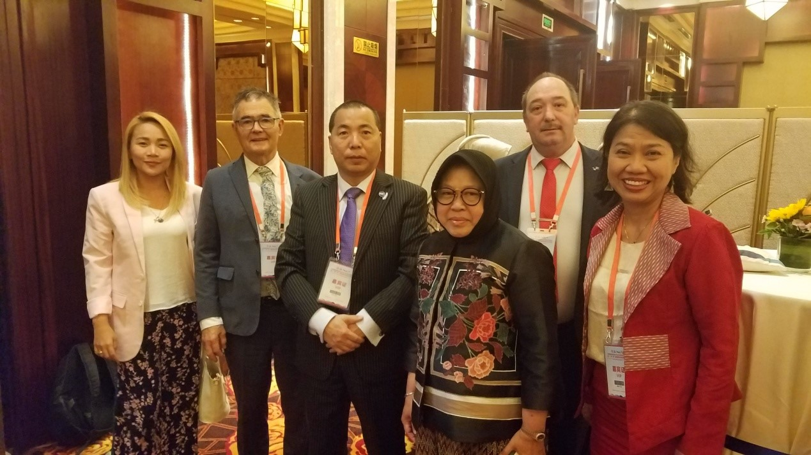
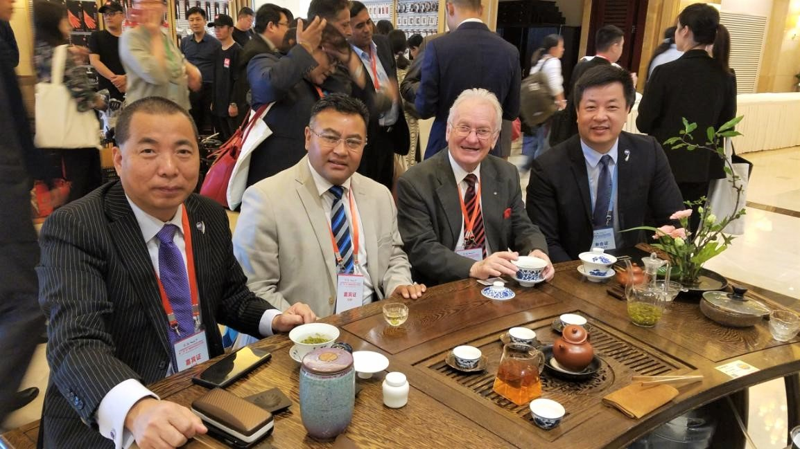
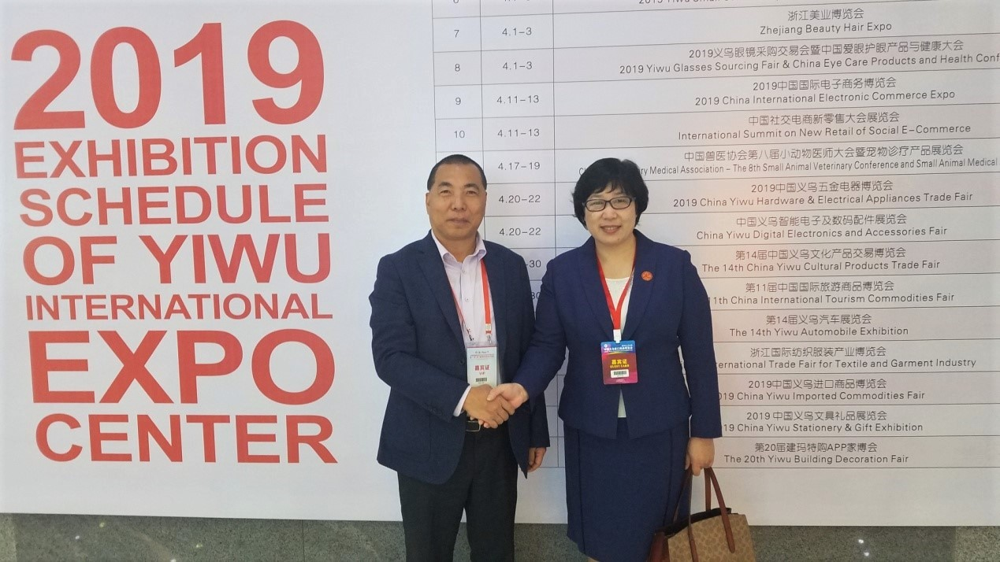

Yiwu–Buy Global,Go Global
义乌–买世界，卖世界
共享贸易畅通机遇，促进城市共赢发展
2019年5月21-24日，来自世界城市和地方政府组织亚太区和全球41个国家79个城市的政商代表及智库学者360余人，在中国义乌出席了世界城地组织亚太区2019年执行局暨“一带一路”国际城市经贸合作对话会。
左：义乌市长 王键
左2：世界城地组织亚太区主席Tri Rismaharina 右2：世界城地组织亚太区秘书长Bernadia 右1：义乌市常务副市长多佳
会议“围绕共享贸易畅通机遇，促进城市共赢发展”这一主题，进行了广泛深入的讨论，分享了愿景和理念，并达成诸多共识。
新西兰作为世界城地组织亚太区联合主席，出席了该次峰会。
左：洪承琛先生 右：新西兰但尼丁市长、联合主席Dave Cull
世界城地组织亚太区联合主席Stephany Uy-Tan与新西兰代表合影
就当今世界发生复杂深刻的变化、国与国之间相互联系与依存日益紧密的新形势下，如何加强合作空间与扩大共同利益、携手应对共同挑战等问题，洪承琛先生与参会各组织和政府官员进行了深入的交流。

左1：联合主席Stephany Uy-Tan 左2：但尼丁市长Dave Cull 右1：世界城地组织亚太区秘书长Bernadia 右2：世界城地组织亚太区主席Tri Rismaharina
贸易畅通是城市拓展贸易空间、优化贸易结构、实现可持续性增长的动力和共同愿望。会议主张加强城市间政策沟通与协调；倡议推动城市间基础设施互联互通，共建“一带一路”陆港网络；呼吁城市提升投融资能力创新；深入推动不同城市文明相互理解、相互尊重，多元文化交流借鉴、包容发展。

会议茶歇时间，品尝博大精深的中国茶道文化 左2：联合主席Ashok Kumar Byanju Shrestha 左3：世界城地组织亚太区大使 Peter Woods

右：国际商会中国国家委员会会员发展部副部长 杨虹女士
本着平等、合作、共享原则，开发、绿色、廉洁理念，追求高标准、惠民生、可持续目标，把联合国2030年可持续性发展议程融入共建“一带一路”。本次会议既是对今年4月25-27日在北京召开的第二届“一带一路”国际合作高峰论坛成果的积极呼应，也是创新全球城市对话、交流与合作平台的有益尝试，意义重大。
来自新西兰的洪承琛先生、但尼丁市长Dave Cull、新西兰非物质文化遗产中心主席许自达共同出席会议。